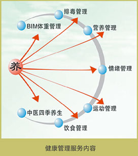

A．健康管理HEALTHMANAGEMENT
现代社会人们对健康的三大需求：一是维护健康；二是消除亚健康；三是干预并促进健康。即对现代医学尚未解决的问题，运用多种健康干预手段和健康促进技术，进行综合全面健康管理，以提高人们的健康水平和生活质量。
这种维护健康，消除亚健康，干预并促进健康的全程健康技术体系，在国际上称之为：健康管理。
B．定制方案CUSTOMIZEDSOLTUIONS
健康=8%医疗+17%社会环境因素+15%遗传因素+60%生活方式。由此可见，其中60%生活方式是我们可选和可控的。想拥有健康，首先需树立先进的健康观念，科学的饮食结构、良好的生活习惯、合理的运动、豁达的心胸，再加上坚持不懈的健康管理，就能收到理想的健康效果。
我们将根据不同人的具体情况，由专家为您会诊并量身定制个性化健康管理方案，针对不同个体进行辨证施治和管理。
C．排毒养生DETOX
排毒养生，由多位著名营养食疗专家、自然疗法专家、生机养生专家组成专家团队，在传承中国食疗文化的基础上，结合国际最领先的生机排毒产品、自然疗法医学、整体营养学、开放辅助医学的基础上，凭借多年来为国家领导及社会名流进行食疗养生和驻颜抗衰老的实践经验，研发并成功运作的排毒养颜养生项目。
该项目适合于高端人群快速提升健康状态的体验课程。课程内容和流程，是专家团队经过多年的研究与实践，并融合了国内外身心净化理念、方法及经验而设定的。
1.自然疗法
自然疗法起源于西方替代医学，所谓自然疗法，即运用各种自然的手段来预防和治疗疾病。具体而言，自然疗法是应用与人类生活有直接关系的物质与方法，如食物、空气、水、阳光、体操、睡眠、休息以及有益于健康的精神因素，保持和恢复健康的一种科学艺术。
自然疗法是以人体健康为核心，重点强调维持身体健康和预防疾病。而西医是以疾病为核心，重点放在当机体出现了疾病时，如何诊断和治疗。因此两种体系在学术思想上和技术手段上迥然不同。自然疗法的哲学指导思想是：深信机体的自愈能力，在其医疗过程中尽量避免使用任何削弱机体自愈能力的的医疗手段，不能忽视机体的自愈能力，更不能用各种疗法取而代之。因此自然疗法的指导原则是：教育患者采用健康的生活方式，增强机体的自愈能力，应用自然和无毒的疗法。
什么是自然疗法？
自然疗法是应用与人类生活有直接关系的物质与方法，如食物、空气、水、阳光、体操、睡眠、休息以及有益于健康的精神因素，如希望、信仰等来保持和恢复健康的一种科学艺术。
自然疗法的起源
自然疗法起源于18和19世纪的西方替代医学。自然疗法这一术语直到19世纪末才开始使用。但其哲学指导思想可追溯到公元前400年医学中的希波克拉底学派。自然疗法与西医疗法的区别
自然疗法是以人体健康为核心，重点强调维持身体健康和预防疾病。而西医是以疾病为核心，重点放在当机体出现了疾病时，如何诊断和治疗。因此两种体系在学术思想上和技术手段上迥然不同。
自然疗法的哲学指导思想
深信机体的自愈能力，在其医疗过程中尽量避免使用任何削弱机体自愈能力的的医疗手段，不能忽视机体的自愈能力，更不能用各种疗法取而代之。
整体自然疗法
该疗法提倡将西医的先进检测设备以及急救处理、重大疾病护理与中医的养生哲学，印度的阿育吠驮医学，及古希腊的医学思想结合起来，让患者主动承担健康照顾的责任，学习正确的呼吸、运动、饮食、心理矫正、睡眠、放松方式，补充营养并配合各种调理技术，追求健康。
整体自然疗法并不排斥传统医疗中的中医和西医，而是把各种医疗技术进行整合，从而发挥最大作用，并合理地去使用资源。过去的问题在于，错误地放大了各种治疗的作用，把用于控制的技术和方法，变成了用于整个健康的维护。
整体自然疗法 是采用对人体没有副作用的方法来提高自身的愈病能力，提高自己的抵抗力，从而达到身体健康的目的。
整体自然疗法的基础，在于相信人体作为大自然创造的精华，本身具备了大自然几十亿年来，抵抗各种伤害和压力的经验。这些经验以密码的方式写在DNA内。一旦有需要的时候，这些密码就会打开，从而启动一系列的应急、修复措施。这些措施的表现形式，实际上就是被称作疾病的症状。它是人体受到伤害时，一种根据体内现有资源，进行生物治疗的方式，也是人在压力状态下，采取的自我保护手段，是一种折衷。目的是从被破坏的平衡中建立新的平衡，身体的反应是随机的，根据压力的不同，随机地进行调整。每一种调整，最后都表现为一系列的症状，医学上也根据不同的症状，取名不同的疾病。这也是各种疾病一直找不到有效的治疗办法的原因。因为疾病本身就是身体的自我治疗，在没有充分认识疾病对于身体的实际意图之前，医生们是无法帮助身体康复的。
如果我们把治疗疾病，改为支持身体，支持身体对抗压力所表现的疾病。那么身体的治疗得到有利的支持，就可以帮助身体自愈。
2.生机饮食
生机饮食就是指不吃经人工程序干扰或被污染的食品(农药、化肥、化学添加剂、抗生素、荷尔蒙、辐射等)，尽量选择新鲜的有机食物，按正确的方式进食、排毒。这样可以避免人体内积累过多的化学毒素，免去食品添加物对人体造成的负担。生机饮食就是运用天然的食物，回归自然的饮食方式。
现代生活中，随着人们生活水平的不断提高,由饮食习惯不合理引起的“文明病”逐渐在社会中蔓延开来。面对这些，人们开始认识到多吃蔬菜、水果、杂粮等对于增强人体免疫力的重要性。从膳食营养的角度看，水果、蔬菜、杂粮富含多种维生素、矿物质和膳食纤维,特别是含有丰富的维生素A和维生素C，对改善体质、提高机体免疫力有非常重要的作用。现今人们饮食以肉食为主,即使食用蔬菜，对蔬菜的食用方式大多是煎、炒、烹、炸，这样蔬菜当中的维生素大部分被破坏，人体的免疫系统长期得不到有效的修复,导致亚健康体质。生机饮食正是以此为出发点，强调有机与生食的结合。在保证营养均衡的原则下，提倡“多吃蔬菜、水果、杂粮”，特别是当身体不适、健康状态欠佳时，可以通过生机饮食将体质调整为弱碱性，有效提高身体的免疫力，改善身体的不适症状,拥有健康和活力。生机饮食的作用
(1)一身轻松：鲜果、鲜蔬中富含纤维素或叶绿素,具有解毒功能，是体内的“清洁剂”，有助于消除体内累积的毒性物质，清除肠道内、血管内垃圾，排除体内毒素。通过生机饮食，减少了高脂肪、高胆固醇、高糖、高盐等食物的摄入，使胃肠得到充分的休息，可将体内积存的宿便、垃圾和毒素排出体外。从而享受一身轻松的快乐。
(2)平和安静:生机食品中含有丰富的维生素、钙、钾、镁、铁等矿物质和微量元素，是天然的神经稳定剂，能有效缓解人的紧张、烦躁的情绪，缓解心理压力。生机饮食可有效改善人的躯体疲劳和心理疲劳,以及心烦、失眠等症状，使人变得安静平和。体验者可明显感到神清气爽，心情愉快，精力充沛，充满自信，焕发青春活力。
(3)养颜瘦身：生机排毒餐口味清淡，少油、少盐,而蔬果又含丰富的纤维素，这样的饮食组合可以促进人体新陈代谢，减轻肠胃负担,维持良好的排毒功能。其中的可溶性膳食纤维有降血脂、降血压和减肥功效,并能有效防止色素沉积引起的色斑，以及身体浮肿导致虚胖等问题的产生。
(4)增强免疫力:生机食物(芽菜、新鲜水果类)多含有丰富的酵素、维生素及多种生物活性物质，这些物质进入人体后可以提高血液含氧量，让人体的酸碱值偏向弱碱性。当人体的PH值处于7.35-7.45之间，即血液、尿液呈弱碱性时，人体的免疫力会达到最强。

从饮食的角度看,“排毒餐”并不神秘，只不过是一种回归自然的饮食方式而已。现代的文明病，几乎都和饮食有很大的关
系，只要我们改变生活习惯，调整饮食结构，这些现代文明病自然会离我们而去。“排毒餐”，不仅仅是一餐一饭，而是一种
健康、理性、文明的生活方式。
D. 服务内容SERVICECONTENT
排毒养生，选择在山清水秀的度假胜地，由权威专家讲授最新的健康理念和生机食疗、排毒养生的知识与方法，采用三天
两夜的封闭式健康管理。由营养专家根据学员的不同体质和身体状况专门调配饮品和营养餐。并通过清肠排毒、清肺排毒、清
血排毒、肝胆排毒、汗腺排毒、运动排毒等系列排毒形式，为身体进行一次全面的体内排毒和清理。让每位参与排毒养生的学
员感受到轻松、愉快、和谐、温馨并与大自然身、心、灵交融。
养==BIM体重管理==排毒管理==营养管理==情绪管理==运动管理==饮食管理==中医四季管理
E．养生原理HEALTHPRINCIPLE
百病从肝治（先净化肝胆，再整体净化，实现自然养生）
肝气失调导致：精神抑郁、双眼干涩、失眠多梦、食欲不佳、消化不良、烦躁易怒
F．服务流程SERVICE PROCESS
加入会员—医院体检—专家解读—系列排毒—定制方案—跟踪服务—健康一生